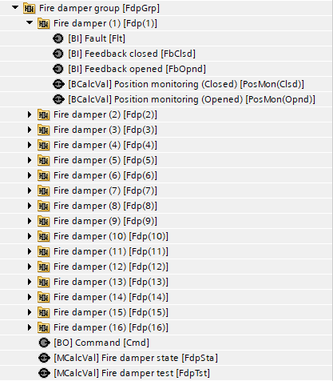
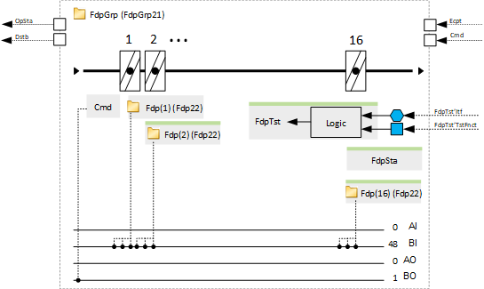
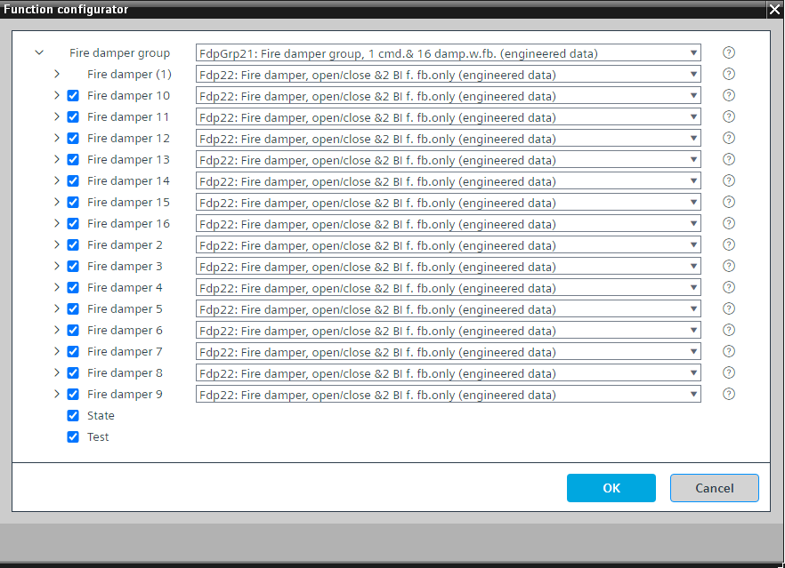

[FdpGrp21] 防火风阀组，1 个命令和 16 个仅带反馈的风阀
Program block, name / node subtype: [FdpGrp21] Fire damper group, 1 command and 16 dampers with feedback only
Library hierarchy: Ventilation and air conditioning equipment
Family: Fdp
项目树 | 图表 |
|---|---|
|
 |  |
Configurator


程序块存储在没有 I/Os. 的库中 使用auto-create and auto-connect函数创建 I/Os 和 /or 将它们连接到接口块，例如 R_A、CMD_B。或者，从包含库中预定义 I/Os 的文件夹中取出 I/Os，并从工厂中取出 /or，并将它们连接到接口块。
控制防火阀组。
有一个通用命令和最多 16 个仅带有反馈信号的防火阀（Fdp22 或 Fdp30 类型）。
所有防火阀的打开和关闭时间都可以在程序的一处进行参数化。
该程序块具有以下可选功能：
Option: Fire damper 2...Fire damper 16
仅通过反馈信号监控防火阀 (Fdp22)。
Option: State
包含程序逻辑和具有以下状态的多状态计算值（趋势）：
- In motion
- Closed
- Opened
- Test, In motion
- Test, Closed
- Test, Opened
必须打开所有防火阀才能进入状态 3 或 6。
所有防火阀必须关闭才能进入状态 2 或 5。
仅当选项“测试”可用时才能激活状态 4、5 和 6。
Option: Test
包含用于执行防火阀测试的程序逻辑和具有以下状态的多状态计算值（趋势）：
- Started
- In progress
- Ended
- Not successful
- Successful
空气处理机组工厂模式中“防火阀测试”的接口接收到必须开始测试的信号。
姓名 | 描述 | 类型 | 报警/通知类 | 趋势/类型 |
|---|---|---|---|---|
Cmd | Command | BO：二进制输出 | No | No |
Fdp(1) | Fire damper (1) | [Fdp22] Fire damper, open/close function & 2 BI for feedback only | N/A | N/A |
描述 |
|---|
|
状态 |
Test |